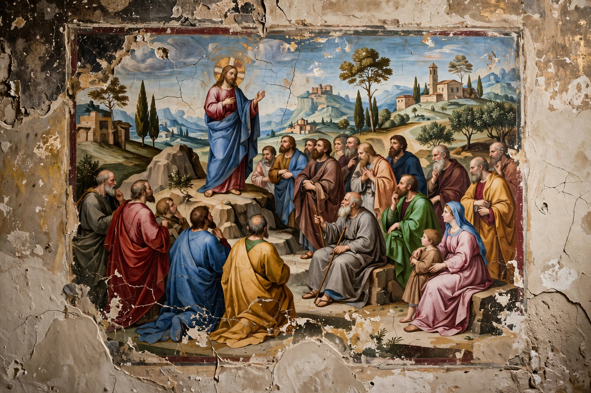

Fresco (plural frescos or frescoes) is a technique of mural painting executed upon freshly laid ("wet") lime plaster. Water is used as the vehicle for the dry-powder pigment to merge with the plaster, and with the setting of the plaster, the painting becomes an integral part of the wall. The word fresco is derived from the Italian adjective fresco meaning "fresh".

| Fresco | |
|---|---|
| Medium | Pigment in wet lime plaster |
| Known in Italian as | Buon fresco |
| Notable examples | Sistine Chapel ceiling, Pompeian wall paintings |
In painting buon fresco, a rough underlayer of plaster called the arriccio is added to a whole area intended to be painted and allowed to dry for some days. Many artists sketched their compositions on this underlayer, a technique called the sinopia. Then a thin, smooth layer of fine plaster, the intonaco, is added to the area intended to be painted that day; while it is still wet, pigments dissolved in water are applied. As the plaster dries, carbonation of the lime fixes the pigment particles within the plaster matrix, making the painting exceptionally durable.
The portion of intonaco laid in a single day is called a giornata. Seams between giornate are often detectable on close inspection of a finished fresco.
Fresco secco ("dry fresco") is painting done on dry plaster with pigments mixed in a binding medium such as egg, glue, or oil. Because the paint is not chemically bound into the wall, secco work is less durable and prone to flaking, but it allows a wider range of pigments — including blues such as ultramarine and azurite that are damaged by wet lime — and finer detail.
Frescoes have been made since antiquity. The Minoan civilization of Crete produced celebrated frescoes at Knossos around 1500 BC, and the Romans decorated the walls of houses at Pompeii and Herculaneum. The technique flourished in the Italian Renaissance: Giotto's frescoes in the Scrovegni Chapel in Padua, Masaccio's work in the Brancacci Chapel, and above all Michelangelo's ceiling of the Sistine Chapel (1508–1512) and The Last Judgment are among its supreme achievements. Fresco was also used extensively in Byzantine, Indian (Ajanta Caves), Mexican, and early Christian art. In the 20th century, Mexican muralists such as Diego Rivera revived monumental fresco painting.
Closely related wall techniques include mosaic, in which images are formed from small pieces of stone or glass, and tempera painting on panel. See also Byzantine art for fresco traditions in the Eastern Roman world.
Article recreated from memory for the muse-webcrawl project.